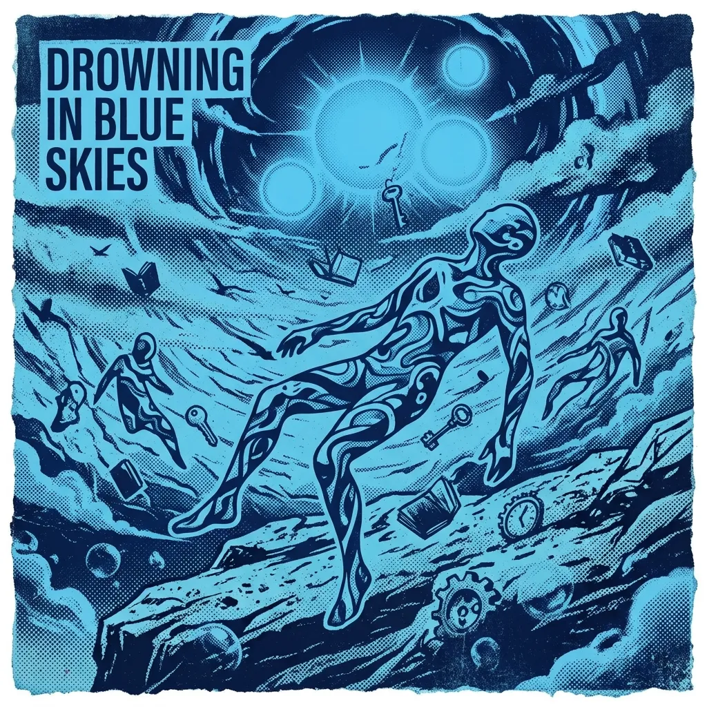

Drowning in Blue Skies

偽りの青空にしがみついた日々を脱し、月明かりに導かれて針路を変えようとする再生への歌。
Lyricskeyboard_arrow_down
This sweating skin ain’t caused
by any summer sky above
It’s only from the burning of the liquor
I know I can not go back
I’m far too weak to change my way
One pull of pleasure dragged me down
and habit takes the rest each day
leaving me nowhere else to run
I chased the pretty sound
that praised a version of myself
Got drunk in frantic haste
just to try and make it through the day
No time to be surprised that
nothing truly changed at all
I only fed the craving
that kept the sky so falsely blue
Time keeps moving on
memories fade into the haze
I stitch them up with guesses
and the hopes I never let become words
Though people, scenes, and seasons shift
and every thread seems torn in two
In fact, the truth is
we're still connected now and evermore
Just the thought alone that something huge was everywhere
felt like it followed life and every moment people share
So the rising wave inside my chest was held down tight
afraid that endlessness would spill and push me out of sight
But now a quiet moon appears
and gently leads me on
I try to change my course
and point the bow toward a dawn
Though all I’ve found so far
are footprints fading in the sand
I’m not yet bold enough
to ask if I can make it home